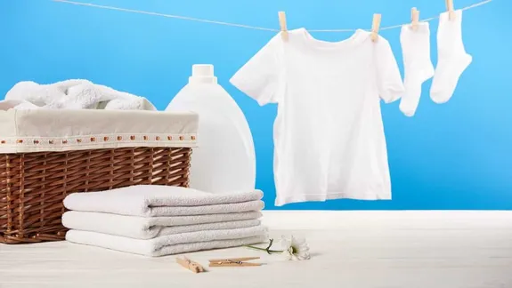

"La ropa blanca simboliza la pureza de quien la usa"
A continuación te daremos 10 tips para el lavado de tu ropa blanca:
- Separa siempre: Antes de comenzar, separa la ropa blanca de la de color para evitar transferencias de color.
- Pretrata manchas: Aplica un tratamiento específico para manchas en las áreas afectadas antes de lavar. Vinagre blanco o bicarbonato de sodio pueden ser buenos aliados.
- Elige el detergente adecuado: Usa un detergente diseñado para ropa blanca, que ayude a mantener o recuperar el brillo sin dañar los tejidos.
- Temperatura del agua: A menos que las etiquetas indiquen lo contrario, usa agua caliente para ayudar a eliminar las bacterias y asegurar una limpieza profunda.
- No sobrecargues la lavadora: Lava cargas moderadas para que la ropa tenga suficiente espacio para moverse y limpiarse adecuadamente.
- Usa blanqueador con precaución: Si decides usar blanqueador, asegúrate de que sea apto para la ropa blanca y sigue las instrucciones al pie de la letra para evitar daños.
- Remojo en agua caliente: Para ropa muy sucia o amarillenta, un remojo previo en agua caliente con un poco de detergente o bicarbonato puede hacer maravillas.
- Lavado a mano para delicados: Las prendas delicadas a menudo se benefician de un lavado a mano suave en lugar de la acción más brusca de la lavadora.
- Secado al sol: Si es posible, seca la ropa blanca al sol. Los rayos UV tienen un efecto blanqueador natural que puede ayudar a mantener tu ropa brillante.
- Almacenamiento adecuado: Guarda la ropa blanca en un lugar fresco y seco, preferiblemente separada de la ropa de color para evitar la transferencia de colores incluso mientras se almacena.